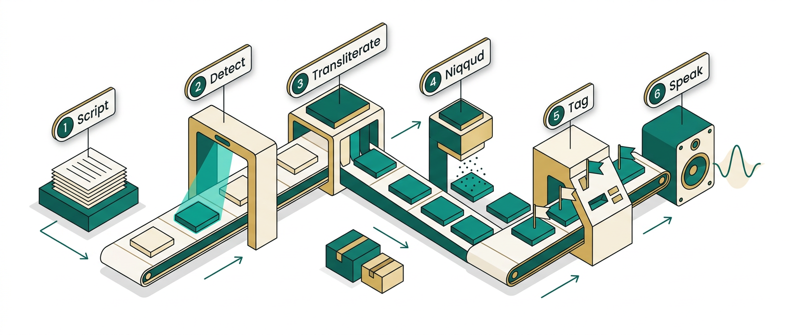
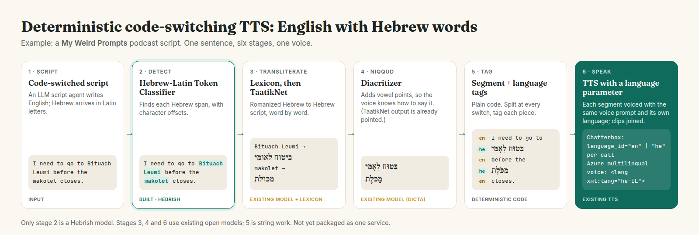
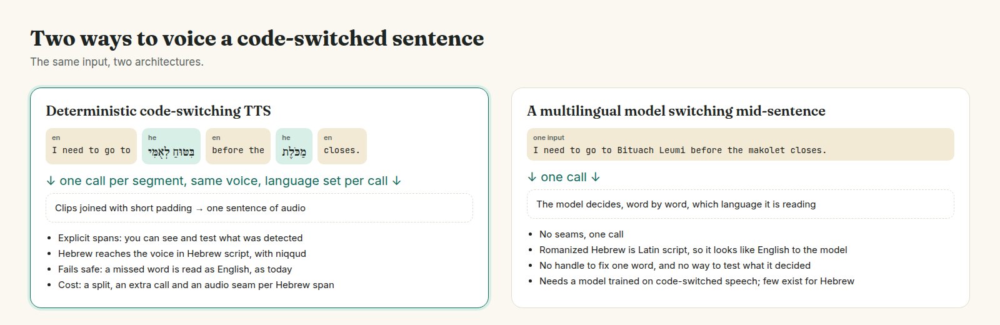

How small, existing components chain into a pipeline that voices the Hebrew words in an English script as Hebrew, with one voice. A worked example from an AI-generated podcast.
Daniel Rosehill · Hebrish (hebrish.app) · 2026-10-20 · Repository: github.com/Hebrish-ASR/English-Hebrew-Code-Switching-TTS-Pipeline

My Weird Prompts is an AI-generated podcast produced in Jerusalem. An LLM writes each script in English, and Chatterbox TTS voices it. When an episode is about life in Israel, Hebrew terms arrive in Latin letters: I need to go to Bituach Leumi before the makolet closes. The script is itself code-switched. An English voice reads makolet as "MACK-oh-let". Words English already knows (Shabbat, kosher) come out fine; the long tail of everyday Israeli life does not.
The characters give nothing away. Hebrew letters have their own Unicode block (U+0590 to U+05FF), so Hebrew script inside English is trivial to find. Romanized Hebrew is made of the same Basic Latin characters as the English around it; nothing at the character level marks a switch.
Language identification has no answer. GlotLID, fastText lid.176 and lid218e have no label for Hebrew in Latin script (heb_Latn). Sentence-level language ID would call a 90%-English sentence English anyway. A TTS pipeline needs the character offsets of each Hebrew word: token classification.
Translating is not a fix. Many terms have no good English equivalent, and the translation is not what a listener in Israel would say.

| # | Stage | Component | Licence | Status |
|---|---|---|---|---|
| 1 | Script | Any LLM writing English with romanized Hebrew | Input | |
| 2 | Detect | Hebrish/Hebrew-Latin-Token-Classifier (xlm-roberta-base; labels O, B-HE, I-HE) | MIT | Built by Hebrish; run |
| 3 | Transliterate | Curated lexicon, then malper/taatiknet (ByT5) per word | TaatikNet weights: none stated; data CC-BY-SA 3.0 | Existing; run |
| 4 | Niqqud | dicta-il/dictabert-large-char-menaked, for unpointed lexicon forms | CC-BY-4.0 | Existing; run |
| 5 | Tag | Plain code: one (text, language) segment per piece | Run | |
| 6 | Speak | Chatterbox Multilingual, language_id per call; or an Azure multilingual voice with SSML <lang xml:lang="he-IL"> | MIT (Chatterbox) | Written, not run |
The only Hebrish model in the chain. Span F1 0.941 on a term-disjoint test set (no Hebrew term in the test set appears in training), and no false positives on 58 hard negatives. The labelling test is pronunciation, not etymology: Shabbat, kosher and hummus are not flagged. Use the repository's predict.py: the stock transformers pipeline labels sub-tokens and produced stray one-letter spans in our run.
A curated lexicon of expected terms is primary. TaatikNet, the one open model for romanized Hebrew to Hebrew script, is the fallback. It is word-level (trained on about 15K single Wiktionary words), has no sentence context, and returns Hebrew already pointed.
DICTA's nakdan adds vowel points to the unpointed lexicon forms, so the voice does not have to guess how to say them: מכולת → מַכֹּלֶת. Its default output is the standard pointed spelling without vowel letters. It needs transformers<5: under 5.x its character tokenizer loads as word-level and the output comes back unpointed, with no error. Phonikud is the alternative when the TTS engine takes phonemes rather than text.
Split the sentence at every switch:
en 'I need to go to ' · he בִּטּוּחַ לְאֻמִּי · en ' before the ' · he מַכֹּלֶת · en ' closes.'
Chatterbox Multilingual supports Hebrew ("he") but takes the language per call, not inline, so each segment is voiced separately with the same voice prompt and the clips are joined with short padding. Two cautions from its source: for Hebrew its tokenizer tries to re-diacritize with dicta_onnx, replacing your niqqud, so leave that package uninstalled; and voicing Hebrew with an English reference clip bleeds accent, which cfg_weight=0 reduces. Among hosted engines, only Azure's multilingual voices accept inline <lang xml:lang="he-IL">; Google documents Hebrew in <lang> as unsupported and Polly has no Hebrew.
| Sentence | Span | Score | Stage 3 | Stages 3-4 output |
|---|---|---|---|---|
| I need to go to Bituach Leumi before the makolet closes. | Bituach Leumi | 0.998 | lexicon | בִּטּוּחַ לְאֻמִּי |
makolet | 0.999 | lexicon | מַכֹּלֶת | |
| My savta says the arnona went up again, so I called the iriya. | savta | 1.0 | taatiknet | סַוְטָה ✗ (correct: סַבְתָּא) |
arnona | 0.996 | lexicon | אַרְנוֹנָה | |
iriya | 0.998 | taatiknet | אִירִיָּה ✗ (correct: עִירִיָּה) | |
| We spent Shabbat with the mishpacha and the kids ate bamba all afternoon. | mishpacha | 0.998 | taatiknet | מִשְׁפָּחָה |
bamba | 0.993 | taatiknet | בַּמְבָּה |
Both errors come from TaatikNet guessing a spelling without context, which is why the lexicon is primary: adding savta and iriya to it fixes them. Shabbat was correctly left as English.

The deterministic pipeline decides every switch in code before the TTS sees the text: what was detected can be read, tested and corrected one word at a time, and a missed word fails safe to today's behaviour. Its cost is a split, an extra TTS call and an audio seam per Hebrew span, so the detector favours precision. The alternative, one multilingual model trusted to switch mid-sentence, gets no script signal from romanized Hebrew and offers no handle on its decisions. A TTS model trained on code-switched English-Hebrew speech could change that; we have not found an open one (searched 2026-10-20, not exhaustively).
Each stage reads and extends one JSON object, so any stage can be swapped for another implementation:
{
"text": "I need to go to Bituach Leumi before the makolet closes.",
"spans": [{"start": 16, "end": 29, "surface": "Bituach Leumi", "score": 0.998, "hebrew": "ביטוח לאומי", "source": "lexicon", "pointed": "בִּטּוּחַ לְאֻמִּי"}, …],
"segments": [{"text": "I need to go to ", "lang": "en"},
{"text": "בִּטּוּחַ לְאֻמִּי", "lang": "he"},
{"text": " before the ", "lang": "en"},
{"text": "מַכֹּלֶת", "lang": "he"},
{"text": " closes.", "lang": "en"}]
}
Detector: huggingface.co/Hebrish/Hebrew-Latin-Token-Classifier (original DOI 10.57967/hf/10997) · TaatikNet: huggingface.co/malper/taatiknet, github.com/morrisalp/taatiknet · DICTA nakdan: huggingface.co/dicta-il/dictabert-large-char-menaked · Phonikud: github.com/thewh1teagle/phonikud · Chatterbox: github.com/resemble-ai/chatterbox · Azure SSML: learn.microsoft.com/azure/ai-services/speech-service/speech-synthesis-markup-voice · Google SSML: docs.cloud.google.com/text-to-speech/docs/ssml · Polly languages: docs.aws.amazon.com/polly/latest/dg/supported-languages.html. Code MIT; text and figures CC-BY-4.0.